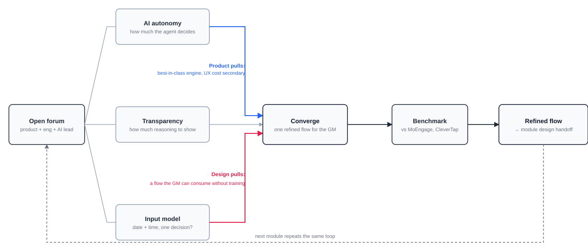
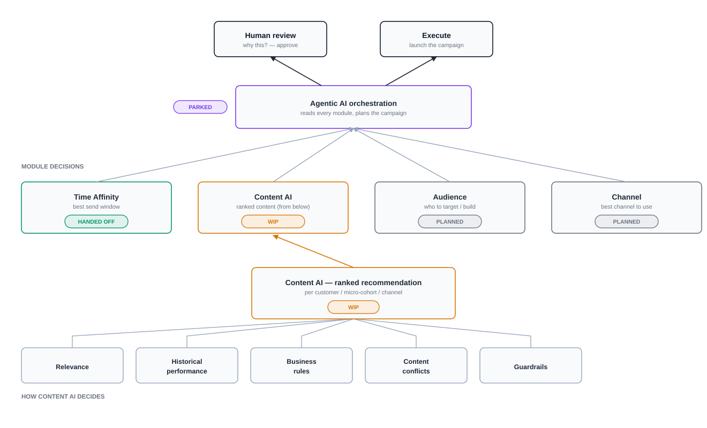
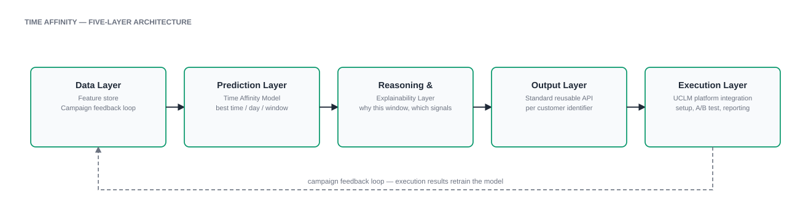
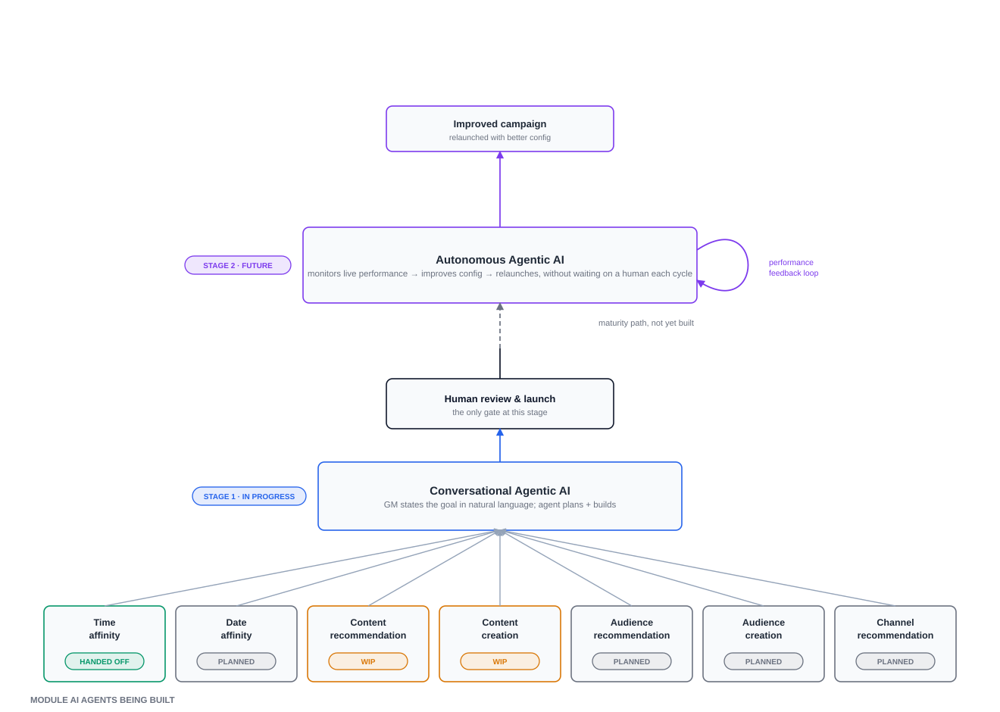
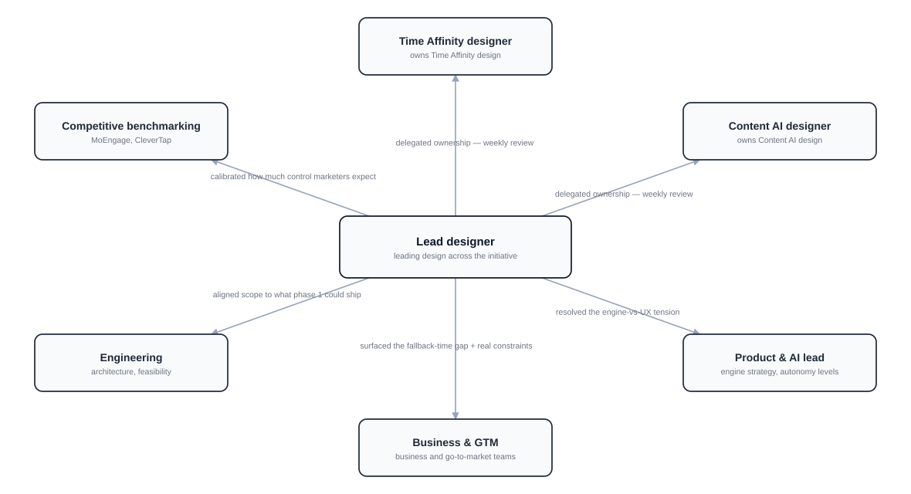

01 — Case study · Oct 2023 – now · three years, one product
Campaigns, now with a brain
TL;DR
To run one campaign across SMS, WhatsApp and email, an Airtel enterprise team needed five tools. Over three years I took the platform from a tool that leaned on Airtel's ops teams for almost every step, to a mostly self-serve one, to one unified platform, and now an AI-native one — where AI plans and a person approves.
3 yrsone product, five stages of maturity
5 → 1campaign tools unified into UCLM
7teams aligned across four rounds
13user interviews shaping the roadmap
Made IQ Reach self-serve — step by step, from reporting to onboarding and payments, so clients stopped depending on ops; plus its most logic-heavy flows, then IQ Conduit for a business line with a ~US$65M revenue target.
Unified the tools — led design for UCLM, which was sold to an internal client before build, shipped Phase 1, and is rolling out in Africa.
Added intelligence — leading Airtel's first AI initiative in campaigns: Time Affinity handed off, Content AI in design, an agentic builder validated.
Impact: [headline adoption metric — to be added after Phase 1 data]
The product
Airtel's enterprise campaign platform: IQ Reach → UCLM (Unified Campaign Lifecycle Manager) → an AI-powered campaign manager heading towards SaaS.
My role
Design lead across all three stages. I set direction, ran research and alignment, and led a team of two designers on the AI modules — using AI tools to prototype and execute faster.
Title · Timeline
Senior Lead Product Designer, Airtel Oct 2023 – now
The problem
Five tools, one marketer, one campaign
Airtel's campaign business had grown tool by tool: a push tool, a pull tool, an audience manager, a planner and a third-party engagement platform for WhatsApp, RCS and email. Each had its own owners, roadmap, data and definition of a "campaign".
The company's own pre-read for unification named the cost: fragmented operations, multiple teams, multiple tools, multi-channel complexity, operational dependency and no single view of how campaigns performed.
“The organisation was structured around products. Customers were trying to run a campaign.”
How I worked
The same loop on every stage, from the first reporting fix to the AI modules. Each pass ended with something real people could react to.
Discover13 interviews, support and ops pain, the business pre-read
BenchmarkHow MoEngage and CleverTap handle campaigns, scheduling and AI
AnalyseSynthesise into problems, priorities and "how might we" questions
PrototypeClickable prototypes, built fast with AI tools
AlignFour rounds, from leadership to tech leads
Ship & learnPhase by phase, with a post-launch study
Research
What 13 interviews told us
I spoke with the people running campaigns every day — growth and campaign managers — and with the teams supporting them. Separately, interviews on the existing audience-creation journey surfaced 3 critical and 5 high-priority issues: a UI refresh would not fix them; they needed structural change.
01
People dropped off while creating campaigns
Too many steps, split across tools, before a campaign could go live.
→ One guided campaign builder
02
Choosing an audience was the least-liked step
Rules were hard to build and harder to check before sending.
→ Audience rebuilt as part of the campaign, not a separate tool
03
Rich formats confused people
WhatsApp carousels and channel set-up needed help from other teams.
→ Channel settings and templates in one place
04
No way to test before launch
Marketers sent campaigns without seeing what customers would get.
→ Preview and test steps before launch
05
No single view of results
Reporting lived in each tool, so nobody could compare channels.
→ Reporting first, then unified reporting
06
Every task leaned on ops
Onboarding, payments and requests ran through Airtel teams.
→ Wallet, digital KYC and a request centre
Benchmarking
What the leaders do
I benchmarked MoEngage and CleverTap on campaign creation, scheduling and AI-assisted content, to calibrate how much control enterprise marketers expect before detail turns into overload. [Add any other platforms you reviewed.]
Channels are steps of one campaign, not separate products.
Self-serve onboarding and payments are table stakes.
Marketers trust AI when they can see the evidence — which led us to show peak engagement hours before asking for a fallback send time.
Analysis
How might we…
…let one marketer run any channel from one place?
…turn a long-wanted idea into something engineering commits to?
…adapt one platform to different markets without forking it?
…let AI handle the complexity while the marketer stays in control?

Fig. 1 — The diverge–converge loop on every AI module. Product pulled toward the strongest engine, design toward a flow growth managers could use; the tension resolved at "converge", not before.
The principle behind every AI module
Human defines the outcome. AI handles the execution complexity. Human approves the outcome.
Three years
How the platform evolved
Six stages. Each one solved the problem the last one exposed.
1IQ Reach · from Oct 2023
From ops-dependent to mostly self-serve
When I started, IQ Reach wasn't self-serve: onboarding, payments, requests and even understanding results ran through Airtel's ops and sales teams. Clients couldn't see how their campaigns performed — their top request. Rather than pitch a rebuild, I proposed we climb one rung at a time: reporting for every channel first, then self-serve (wallet, digital KYC, a request centre), then retention (milestones and price slabs that reward volume), then scale (agentic and live-agent features, simpler campaign steps, an overview dashboard). Over time, most of what clients needed became something they could do on their own.
I took on the most logic-heavy flows myself: campaign creation, reporting, media and template centres, and DND and blacklist settings.
[IQ Reach: reporting and campaign creation]
Fig. 2 — IQ Reach: reporting and campaign creation
2Two bets · to May 2025
One shipped. One didn't — and taught me why
IQ Conduit shipped: security-sensitive enterprises wanted to use other providers inside their own environment, so we designed vendor registration and traffic management for a business line with a ~US$65M revenue target.
Unifying IQ with DLT, Airtel's compliance platform, didn't. I built a full design strategy; it never found a sponsor. The case was strong on engineering and weak on business ownership. DLT instead grew into its own trust-services product — consent, complaints, business name display and Spam Shield, which I designed hands-on.
3UCLM · from June 2025
A customer made the case
One campaign tool had been wanted for years, but engineering never saw enough impact to commit. What changed was a sale: the UCLM concept was sold to an internal client before build. With a paying owner, unification became a commitment.
I led design for UCLM — one experience for campaign creation, audiences, journeys, reporting, assets and every channel — and co-built Audience Manager from scratch. Phase 1 shipped 9 capabilities; 8 more are scoped for Phase 2.
[UCLM: before (five tools) and after (one lifecycle)]
Fig. 3 — From five tools to one lifecycle: audience → campaign → channel → execution → reporting
4Africa · from Feb 2026
Configure, don't fork
Taking UCLM to Africa showed which of our rules were really India's rules. No DLT, so template approval and sender IDs went away; USSD came back as a channel; payment risk pushed us toward prepaid. The deal closed on our final designs.
Instead of an Africa version, we made compliance and billing configurable per market. One product, switched on per country — the step that makes SaaS possible.
5Module intelligence · handed off & in design
AI that answers one question well
Time Affinity predicts when each customer is most likely to engage. Content AI ranks content on relevance, past performance, business rules, conflicts and guardrails, with a path for clients to bring their own models.

Fig. 4 — How the modules connect: each answers one question, and all of them feed one orchestration layer that a person reviews.

Fig. 5 — Time Affinity in five layers. The reasoning layer is what lets a marketer see why a time was chosen.
6Agentic · POC validated, Beta scoped
State the goal, review the plan
The growth manager describes the outcome in plain language. The agent assembles the campaign from every module and hands it back for review and launch. Next: an agent that watches live performance and relaunches better versions — and the open question of where the human still steps in.

Fig. 6 — From module agents to a conversational agent (in progress) and, later, an autonomous one. Human review is the gate at every stage.Alignment
Four rounds from vision to build
A sale settled sponsorship, not agreement. Seven groups — product, engineering, analytics, infrastructure, channel teams, RCS and reporting — had to agree what "one platform" meant.
Vision, with a prototypeI moderated a session with leadership and the client. Reacting to something real moved talk from "whether" to "how".
Insight, with productDeeper findings; product added the technical side. One story, told together.
Closure, with every functionWorkshops plus recurring deep dives on two or three modules at a time.
Commitment, with tech leadsA final presentation, and the work entered development.
Bottlenecks
The hardest UX problems weren't UX problems
They were platform dependencies and alignment. What slowed us down, and how design responded:
Push notifications weren't ready for Phase 1
We kept deep-linking in Phase 1 and moved full push to Phase 2, so launch didn't wait.
Reporting couldn't be validated without real campaign data
We designed against agreed metric definitions and planned validation after first live campaigns.
Audience processing delays held up campaign launch
[Add how the flow handled processing states, e.g. clear status and notifications.]
RCS depended on another team's integration
RCS moved to Phase 2 so the core channels could ship on time.
Trade-offs
What we gave up, on purpose
Every phase was a choice about what not to do yet.
Decision
What we gave up
Why
Reporting before new features
Visible new features in year one
Clients' top ask; visibility earned trust for everything after
Phase 1 = 9 capabilities, Phase 2 = 8
Orchestration, goals, voice, RCS and push at launch
Ship the core lifecycle first; learn from real use
Configurable markets, not a fork
A faster one-off build for Africa
One product to maintain; repeatable for new markets and SaaS
Usable AI over the most powerful engine
Some inputs and model detail upfront
An engine that overwhelms its user fails as a product
Per-step AI switch, not one manual-vs-AI toggle
A simpler-looking form
Marketers need to see and override AI step by step
Optional fallback window for recurring campaigns
Full control over complex recurring schedules
Let Phase 1 ship and learn from real model behaviour
Leadership
Leading the work
Structure before screens. For the AI work, two designers own the modules — one Time Affinity, one Content AI — with weekly reviews. I hold the connecting agentic layer and the stakeholder picture across product, engineering, the AI lead and business teams. AI tools handle much of my own execution, which keeps my time on decisions and alignment.
Steering, not rubber-stamping. When Time Affinity's direction wasn't landing after two reviews — a bare manual-vs-AI toggle with no reasoning shown — I made the case for per-step AI switches and moved the module to the designer best suited to its edge cases.
Listening beyond the brief. Staying close to business teams surfaced the fallback send-time concept, which wasn't in the original ask.
Sharing the playbook. After Phase 1, I ran a session with the wider design team on our process and results; it became a joint brainstorm for another designer's field-staff incentive journey.

Fig. 7 — Leading from the centre: two designers own modules; I hold the connecting layer and every stakeholder relationship.
Impact
Where it stands
9Phase 1 capabilities shipped
2markets: India, and Africa rolling out
[00%][Adoption or campaign-time metric — confirming]
UCLM sold to an internal client before build; Phase 1 live.
Africa deal closed on final designs; compliance and billing configurable per market.
Time Affinity handed off; Content AI in design; agentic proof of concept validated.
Next: UCLM as SaaS that works with any client's existing channel provider.
What I learned
Three years, six lessons
Fix the foundation firstReporting earned the trust for everything after.
Platforms get built when someone paysThe unsponsored DLT bet taught it; the internal client proved it.
Show, don't pitchA prototype gets people discussing how, not whether.
Alignment is a sequenceVision, product, every function, then tech leads.
Configure, don't forkMarket rules are settings, not product.
With AI, usable beats smartControl and visible reasoning earn trust.
Still open
How much of the ranking logic should a marketer see, and how much stays behind a "why this?"
What human review looks like once the agent assembles multi-module campaigns.
How to prove model quality before expanding past Phase 1.